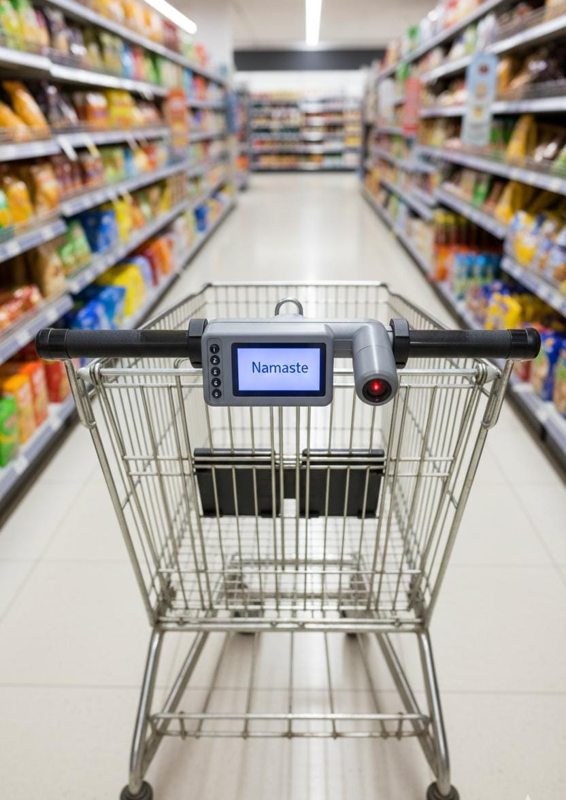
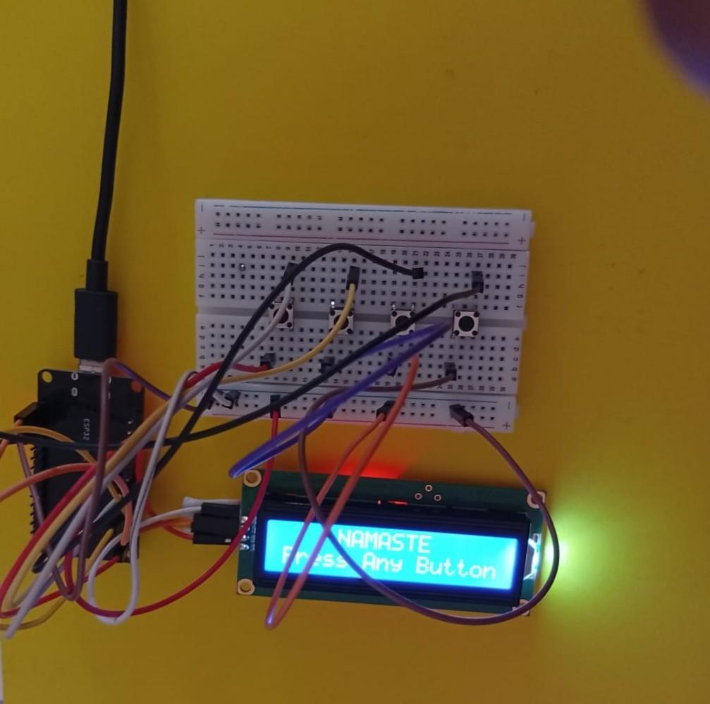

Health Tech
Smart Nutri Cart

Overview
The Smart Nutri Cart is an ESP32-powered device mounted on shopping carts that provides real-time nutritional analysis. It helps users manage lifestyle diseases like diabetes, cholesterol, and hypertension by scanning product barcodes and offering instant health recommendations.
How It Works
- Select Concern: User chooses health concern (e.g., Diabetes) and severity level.
- Scan Product: User scans the barcode of a food item.
- Analysis: System checks nutrition data against health thresholds via the Open Food Facts API.
- Result: LCD displays risk level and suggests healthy alternatives.

Tech Stack
- ESP32 DevKit V1: Main controller processing data and Wi-Fi.
- 16x2 LCD I2C: Visual feedback display.
- Open Food Facts API: Nutrition database.
Future Scope
Plans include integrating a touchscreen interface, AI-based intelligent suggestions, and multi-concern tracking.